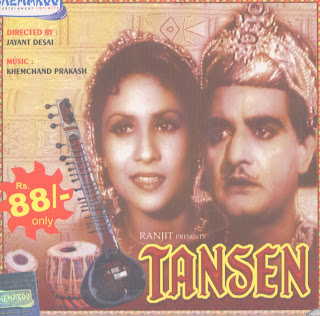

भले ही खाँ साहब ने शुद्ध बिलावल सही नहीं गाया हो, भले ही पखावजी का बांया अंगूठा नकली हो,भले ही तबले पर थाप हल्की पड़ी हो.... पर ज़ुईन खां साहब ने जितना भी गाया; बेदाला ही गया .. हमें तो उतना ही मधुर लगा जितना तानसेन ने गाया।
सप्त सुरन तीन ग्राम....
सप्त सुरन तीन ग्राम गावो सब गुणीजन
इक्कीस मूर्छना तान-बान को मिलावो-२
औढ़व संकीरण सुर सम्पूरण राग भेद
अलंकार भूषण बन-२
राग को सजावो...सप्त सुरन
सा सुर साधो मन, रे अपने रब को ध्यान-२
गांधार तजो गुमान-२
मध्यम मोक्ष पावो
पंचम परमेश्वर, धैवत धरो ध्यान-२
नी नित दिन प्रभु चरण शीतल आवो
सप्त सुरन तीन ग्राम गावो सब गुणीजन
इक्कीस मूर्छना तान-बान को मिलावो
सप्त....